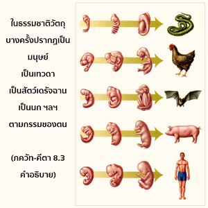

หรือกิจกรรมเพื่อผลทางวัตถุ")
องค์ภควานตรัสว่า ดวงชีวิตทิพย์ที่ไม่มีวันถูกทำลายเรียกว่า พฺรหฺมนฺ และธรรมชาตินิรันดรของเขาเรียกว่า อธฺยาตฺม หรือดวงชีวิต กิจกรรมเกี่ยวกับการพัฒนาร่างกายวัตถุของสิ่งมีชีวิตเรียกว่ากรรม ( กรฺม ) หรือกิจกรรมเพื่อผลทางวัตถุ


 หรือการสร้างอันหลากหลายด้วยการบังคับของจิตสำนึกวัตถุ")



พฺรหฺมนฺ ไม่มีวันถูกทำลายและเป็นอยู่ชั่วกัลปวสาน สถานภาพเดิมแท้ของเขาไม่มีการเปลี่ยนแปลงไม่ว่าในขณะใด แต่เหนือไปจาก พฺรหฺมนฺ ยังมี ปร-พฺรหฺมนฺ พฺรหฺมนฺ หมายถึงสิ่งมีชีวิต และ ปร-พฺรหฺมนฺ หมายถึง องค์ภควานฺ สถานภาพพื้นฐานของสิ่งมีชีวิตแตกต่างไปจากสถานภาพที่เขาได้รับในโลกวัตถุ ในวัตถุจิตสำนึกธรรมชาติคือพยายามเป็นเจ้าแห่งวัตถุ แต่ในจิตสำนึกทิพย์หรือกฺฤษฺณจิตสำนึกสถานภาพของเขา คือ เป็นผู้รับใช้องค์ภควานฺ เมื่อสิ่งมีชีวิตอยู่ในวัตถุจิตสำนึกจะต้องได้รับร่างกายต่างๆ ในโลกวัตถุ เช่นนี้เรียกว่ากรรม (กรฺม) หรือการสร้างอันหลากหลายด้วยการบังคับของจิตสำนึกวัตถุ
ในวรรณกรรมพระเวทสิ่งมีชีวิต เรียกว่า ชีวาตฺมา และ พฺรหฺมนฺ แต่ไม่เคยถูกเรียกว่า ปร-พฺรหฺมนฺ สิ่งมีชีวิต (ชีวาตฺมา) ได้รับสถานภาพต่างๆ บางครั้งกลืนเข้าไปในธรรมชาติวัตถุอันมืดมน และสำคัญตนเองกับวัตถุ และบางครั้งสำคัญตนเองกับสิ่งที่สูงกว่าคือธรรมชาติทิพย์ ดังนั้น สิ่งมีชีวิตจึงได้ชื่อว่าเป็นพลังงานพรมแดนขององค์ภควานฺ ตามที่สำคัญตนเองกับธรรมชาติวัตถุ หรือธรรมชาติทิพย์จึงได้รับร่างวัตถุหรือร่างทิพย์ ในธรรมชาติวัตถุเขาอาจได้รับร่างกายจากหนึ่งใน 8,400,000 เผ่าพันธุ์ชีวิต แต่ในธรรมชาติทิพย์จะมีเพียงร่างเดียว ในธรรมชาติวัตถุบางครั้งปรากฏเป็นมนุษย์ เป็นเทวดา เป็นสัตว์เดรัจฉาน เป็นนก ฯลฯ ตามกรรมของตน เพื่อบรรลุถึงดาวเคราะห์วัตถุบนสรวงสวรรค์ และได้รับความสุขกับสิ่งอำนวยความสะดวก บางครั้งเขาปฏิบัติพิธีบูชา (ยชฺญ) แต่เมื่อผลบุญหมดลงจะกลับมาในโลกนี้อีกครั้งในร่างมนุษย์ วิธีกรรมเช่นนี้เรียกว่ากรรมหรือ (กรฺม)
ฉานฺโทคฺย อุปนิษทฺ อธิบายวิธีการทำพิธีบูชาทางพระเวทที่แท่นพิธีบูชามีการถวายสิ่งของห้าอย่างไปในไฟห้าชนิด ไฟห้าชนิดก่อขึ้นจากดาวเคราะห์สวรรค์ เมฆ โลก ชาย และหญิง และสิ่งถวายในพิธีบูชาห้าอย่าง คือ ความศรัทธา ผู้มีความสุขบนดวงจันทร์ ฝน เมล็ดข้าว และอสุจิ
ในพิธีการบูชาสิ่งมีชีวิตทำพิธีบูชาโดยเฉพาะเพื่อบรรลุถึงสรวงสวรรค์ และก็บรรลุถึงจริงในเวลาต่อมา เมื่อผลบุญแห่งการบูชาหมดสิ้นลงสิ่งมีชีวิตตกลงมาบนโลกในรูปของฝน จากนั้นมาอยู่ในรูปของเมล็ดข้าว และมนุษย์รับประทานเมล็ดข้าวกลายเป็นอสุจิซึ่งทำให้ผู้หญิงตั้งครรภ์ ดังนั้น สิ่งมีชีวิตได้รับร่างมนุษย์อีกครั้งหนึ่งเพื่อปฏิบัติพิธีบูชา และวนเวียนอยู่ในวัฏจักรนี้ สิ่งมีชีวิตจึงวนเวียนบนวิถีทางวัตถุชั่วกัลปวสาน อย่างไรก็ดีบุคคลในกฺฤษฺณจิตสำนึกหลีกเลี่ยงการบูชาเขาจึงปฏิบัติกฺฤษฺณจิตสำนึกโดยตรง ดังนั้นจึงเตรียมตัวกลับคืนสู่เหย้าคืนสู่องค์ภควานฺ
นักวิจารณ์ ภควัท-คีตา ผู้ไม่เชื่อในรูปลักษณ์คิดว่า พฺรหฺมนฺ รับเอารูปของ ชีว ในโลกวัตถุอย่างไร้เหตุผล และเพื่อสนับสนุนประเด็นนี้พวกเขาได้อ้างอิงบทที่สิบห้าโศลก 7 ของ คีตา แต่ในโศลกนี้องค์ภควานฺยังตรัสอีกว่าสิ่งมีชีวิตเป็น “ละอองอณูนิรันดรของตัวข้า” สิ่งมีชีวิตเป็นละอองอณูขององค์ภควานฺ และอาจตกลงมาในโลกวัตถุแต่องค์ภควานฺ (อจฺยุต) ไม่มีวันตกลงต่ำ ดังนั้น ข้อสรุปที่ว่า พฺรหฺมนฺ สูงสุดรับเอารูปของ ชีว จึงยอมรับไม่ได้ มีความสำคัญที่ควรจำไว้ว่าในวรรณกรรมพระเวท พฺรหฺมนฺ (สิ่งมีชีวิต) แตกต่างจาก ปร-พฺรหฺมนฺ (องค์ภควานฺ)